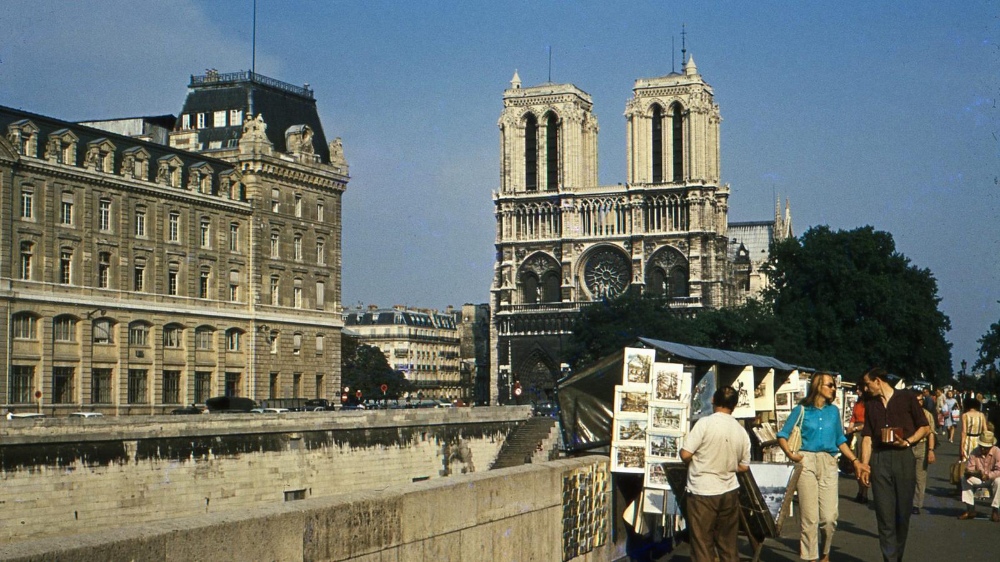

火车到巴黎北站的时候是下午四点，出站第一口气是面包和地铁同时存在的味道。我没有立刻去看铁塔，而是先沿塞纳河走了一段——河边的旧书摊刚支起来，卖明信片的老人正在收摊前的最后一批客人。桥上有情侣在拍照，桥下驳船缓慢经过，船上的男人抱着手看手机。我拖着箱子走得很慢，因为这是我第一次来，我想先从河开始认识这座城市。
第二天清晨六点我又回到河边。这个时间的塞纳河只属于跑步的人、遛狗的人和运沙石的驳船。天光是那种很淡的蓝，河面把路灯拉成一条条细线，偶尔有自行车叮一下铃。我走过了两座桥，在一张长椅坐下，把面包掰给一只不太怕人的鸽子。半小时后城市开始有声音了，那是巴黎每天都要重新启动一次的东西。

第三天下了整天的雨。我躲进圣日耳曼的一家咖啡馆，靠窗坐下，点了一杯咖啡和一块柠檬挞，然后在那里坐了三个小时。雨把街灯的光晕开，行人撑着伞从玻璃前经过，服务生换了两次桌布，邻座的老先生一直在看同一页报纸。那天我什么景点也没去，却觉得这是我离"生活在巴黎"最近的一次——比任何博物馆都更接近这座城市的心跳。
黄昏我去了特罗卡德罗的台阶。铁塔在整点亮灯，灯一闪一闪地亮起来的时候，台阶上所有人都抬起头，有人鼓掌，有人把相机举得很高。我没有挤到最前面，站在人群边上看了两分钟，然后顺着台阶走下去，沿河一直走到亚历山大三世桥——桥上的灯、水里的倒影、远处的金色穹顶，那一整段路我只想走着，不想拍。
在巴黎的最后一天，我把计划表上的三个"必看"划掉，改成了"随便走走"。穿过玛黑区的小巷、经过一家正在磨咖啡的店、在路边买了一个还很烫的可颂——巴黎好像只为愿意走路的人打开。飞机起飞的时候我在笔记本上写：这座城市不该被参观，它应该被穿过；一条街只在步行速度下才肯显形。